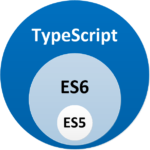
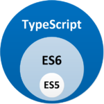

Shower Presentation Engine
Міністерство освіти і науки України Черкаський державний технологічний університет
Кафедра комп’ютерних наук та системного аналізу
Звіт з переддипломної практики
Підготував: студент 4-го курсу
групи КТ - 151
Орєхов А.В.
Зміст
- Вступ
- АСУ "Деканат"
- Ознайомлення
- Функціональні вимоги
- Технології які використовуються при розробці
- Завдання
- Завдання від бази практики
- Завдання від університету
- Виконання завдань від бази практики та університету
- Висновки
Вступ
Метою переддипломної практики є поглиблення, закріплення та застосування
набутих знань у студента-бакалавра, придбання навичок практичної роботи разом з розробниками професіоналами в області
розробки інформаційних систем, програмних виробів, опрацювання й аналізу інформації програмними засобами та використання
інформаційних і управляючих систем; вибір чи уточнення теми майбутньої бакалаврської роботи;
збір матеріалів для написання бакалаврської роботи.
Завдання переддипломної практики:
- Ознайомлення з діяльністю бази практики та її підрозділів, що забезпечують інформатизацію та комп’ютеризацію
- Ознайомлення з посадовими обов’язками інженерно-технічних працівників підрозділів, що забезпечують інформатизацію та комп’ютеризацію
- Ознайомлення з мережним, серверним, комп’ютерним і програмним забезпеченням бази практики, з її інформаційними управляючими системами і технологіями
- Оволодіння практичними навичками щодо забезпечення функціонування інформаційних систем, комп’ютерної техніки бази практики;
- Вивчення досвіду створення і застосування конкретних сучасних інформаційних технологій і систем інформаційного забезпечення для розв’язування задач організаційної та управлінської діяльності бази практики
- Набуття практичних навичок проектування і створення web-орієнтованих ІТ-проектів засобами мов HTML, PHP та ін., з використанням систем керування вмістом (CMS), СУБД тощо
- Вивчення предметної області та збирання фактичного матеріалу, на основі якого буде виконуватися майбутня бакалаврська робота
- Набути навичок самостійної професійної роботи в середовищі трудового колективу
АСУ "Деканат"
Автоматизована система управління студентським контингентом для вищого навчального закладу
призначена для підвищення ефективності функціонування підрозділів ВНЗ та поліпшення якості освітнього процесу,
за рахунок зниження часу який витрачається на процеси збору, обробки та отримання будь-якої інформації, яка запитується.
Функціональні вимоги
Програма являє собою веб додаток і повинна бути невимогливою до системних ресурсів.
Інтерфейс програми має бути мінімалістичним, сучасним та інтуїтивно зрозумілим.
Вимоги до технічних та програмних засобів
| Браузери |
Мінімальні версії |
| Internet Explorer |
9+ |
| Chrome |
6.0+ |
| Firefox |
4.0+ |
Angular
Angular 2 - фреймворк з відкритим вихідним кодом, написаний на JavaScript
і підтримуваний компанією Google. Він являє собою повністю переписану версію свого популярного попередника, AngularJS.
За допомогою Angular можна розробляти програми на JavaScript (застосовуючи синтаксис ECMAScript 5 або 6), Dart або TypeScript.

TypeScript
TypeScript є надбезліччю JavaScript, універсальна мова,
створеним в кінці 2012 року співробітником Microsoft Андерсом Хейслбергом - автором C #.
Основні переваги TypeScript
- Компілюється в нормальний JS
- Підтримка класів, інтерфейсів і нормального ООП
- Сувора типізація, IDE буде давати підказки та підсвічувати помилки,
якщо ви, наприклад, передали в якості аргументу рядок замість числа
- Відсутність CallBack Hell і сотні})})})})})} завдяки Async / Await;
- Наявність всіх нових можливостей в JS, про які ви чули, але поки
не можете використовувати через слабку підтримки браузерами
 

Boostrap
Bootstrap - бібліотека компонентів для створення
інтерфейсу користувача з відкритим вихідним кодом, розроблена компанією Twitter. Вони
будуються відповідно до принципів адаптивного веб-дизайну, що значно підвищує
цінність бібліотеки, якщо ваш веб-додаток повинен автоматично подстроювати свій макет в залежності від розміру екрану пристрою користувача.


RxJS
Набір бібліотек, необхідних для створення асинхронних програм
і програм, заснованих на подіях, з використанням спостережуваних колекцій.
Дозволяє програмам працювати з асинхронними потоками даних на зразок
серверного потоку котирувань акцій або подій, пов'язаних з рухом миші.
За допомогою RxJS потоки даних представляються у вигляді спостережуваних послідовностей.
Цю бібліотеку можна застосовувати як з іншими фреймворками
JavaScript, так і без них.
Завдання від бази практики
- Ознайомитися та набути практичних навичок в створенні реюзабельних компонентів
- Ознайомитися з юніт тестами для Angular компонентів
- Ознайомитися та набути практичних навичок в використанні реактивного програмування (RxJS)
Завдання від університету
- Виправлення та покращення
- Пришвидшити роботу з таблицями
- Збільшити консистентність
- Фічі
- Пошук по всим відрахованим студентам
- Інформація по відрахованому студенту в одному попапі
- Історія відрахувань та поновлень студента
Пришвидшення роботи з таблицями
Проблема
- Рендеринг таблиці з 800 студентів займає 10 секунд
- Після оновлення інформації про студента чи студентів всі данні повторно перезавантажуються
та відбувається повторний рендеринг таблиці
Пришвидшення роботи з таблицями
Можливості вирішення
- Використати віртуальний скролінг
- Оновлювати таблицю з форм або від отриманих данних з сервера
Пришвидшення роботи з таблицями
Варіанти додавання віртуального скролінгу
- Написати свій компонент для таблиць + віртуальний скролінг (Angular 7+)
- + Кастомізація під себе
- - Велосипед
- - Складність в підтримці та розширенні
- Використати наявні компоненти таблиць з вбудованим віртуал скролінгом
- + Підвищення швидкості розробки
- + Підтримка від сторонніх розробників
- + Зниження кривої входу в проект
- - Відсутність потрібного функціоналу?
- - Непередбачуваність?
- - Платність?
Вимоги до компоненту табціли
- Multi column sorting
- Custom Sorting / Filtering
- Column reorder
- Range Selection
- Virtual scroll
- Theme customization
- Clipboard
Порівняння компонетів для таблиць
| Назва |
ngx-datatable |
ag-grid |
TurboTable (PrimeNG) |
| nested |
- |
+ |
- |
| virtual scroll |
+- |
+ |
+ |
| performance |
low |
high |
high+ |
| how work |
component |
component |
wrap native table |
| pro version |
- |
+ |
- |
| integration |
medium |
easy |
complex |
| custom filter |
- |
+ |
- |
| last commit |
2017 |
2019 |
2019 |
| open issues |
600 |
20 |
120 |
Конфігорування колонок
const colDefStudentSurname = {
headerName: 'Прізвище',
field: 'student.surname',
checkboxSelection: true,
minWidth: 150
};
Компонент
<ag-grid-angular>
class="ag-theme-balham students-table"
rowSelection="multiple"
enableCellChangeFlash=true
[animateRows]="true"
[rowData]="students"
[columnDefs]="columnDefs"
[defaultColDef]="defaultColDef"
[accentedSort]="true"
[localeText]="localeText"
[getRowNodeId]="getRowNodeId"
[frameworkComponents]="frameworkComponents"
(selectionChanged)="onSelectionChanged($event)"
(modelUpdated)="onModelUpdated($event)"
(gridReady)="onGridReady($event)"
</ag-grid-angular>
Оновлення без перезавантаження
buildForm() {
this.form = this.fb.group({
photoUrl: this.model.photoUrl,
name: [this.model.name, Validators.required],
patronimic: [this.model.patronimic, Validators.required],
nameEng: this.model.nameEng,
...
motherPhone: this.model.motherPhone,
notes: this.model.notes,
email: this.model.email,
});
}
Оновлення без перезавантаження
this.studentService.updateStudent(Object.assign(this.form.value, { id }))
.subscribe(() => {
this.onSubmit.emit(this.form.value);
this.modal.hide();
})
Оновлення без перезавантаження
updateStudentPersonalInfo(studentPersonalInfo) {
const selectedStudent = this.students.find(student =>
student.id === this.selected[0].id);
for (const col of this.columnDefsAll) {
if (col.field.startsWith('student.')) {
const [, field] = col.field.split('.');
selectedStudent['student'][field] = studentPersonalInfo[field];
}
}
this.gridApi.refreshCells();
}
Додавання колонок
setColumns(columns: string[]) {
this.oldSelectedIds = this.selected.map(a => (a.id));
if (!this.isAllDataLoaded) {
this.studentService.getStudents()
.subscribe((students: StudentDegree[]) => {
this.students = students;
this.isAllDataLoaded = true;
});
}
const cols = [];
for (const column of columns) {
for (const columnDef of this.columnDefsAll) {
if (column === columnDef.field) {
cols.push(columnDef)
}
}
}
this.gridApi.setColumnDefs(cols);
}
Пришвидшення роботи з таблицями...

Фільтрація

Вбудований фільтр
Редагування вже з завантаженими данними - в 3.5 швидше
Відкриття, вібір колонок, редагування - в 3.5 швидше
Пошук по всим відрахованим студентам
Інформація про відрахованого студента
Перевикористання компоненту
<modal-wrapper #modal [title]="'Інформація про студента'">
<tabset>
<tab heading="Особиста інформація">
<app-student-personal-info
[editable]="editable"
#studentPersonalInfo>
</app-student-personal-info>
</tab>
</tabset>
</modal-wrapper>
if (!this.editable) {
this.form.disable();
}
Збільшення консистентності
Наявні проблеми
Кожен новий розробник на проекті вносить щось своє, що може відрізняти від застосованого підходу іншиими.
Що в свою чергу ускладнює освоєння проекту новими розробниками
Збільшення консистентності
Було виділено основні збіжності між компонентами та прийняті такі міри:
- Перехід до одної бібліотеки компонентів Bootstrap
- Перехід від шаблонних форм на реактивні форми
- Вікі сторінка для нових розробників
Висновки
В ході проходження практики я набув досвіду створення і застосування конкретних сучасних інформаційних
технологій і систем інформаційного забезпечення для розв’язування задач організаційної
та управлінської діяльності бази практики.
Набув знань в предметній області та зібрав фактичний матеріал, на основі якого буде виконуватися майбутня бакалаврська робота.
Також набув навичок самостійної професійної роботи в середовищі трудового колективу.